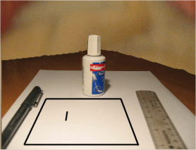

In my day all we had was pen, paper and tippex
The random writings of Joe Mansour
28 March 2025
Oh joyful serendipity, a mere seven years later this blog is finally being updated. My, (let us not call him conscience, but definitely in the role of Jimminy Cricket) learned friend has prompted me to apply some effort to the promotion of my work. And so it goes, eight thousand words have dripped, drawn, dragged out of me, the latest (and last) Calhoun book, to be called Requiem for reasons that will be obvious.
28 March 2018
Two years and 3 days since my last entry. That sounds like something from a book, and I would know, what with being a wroter and all. What has been happening? Lots really, perhaps not lots in the sense of accomplishing anything life changing, other than in my personal life which has had some profound ups and downs. In my writerly life, the beret wearing, gauloise smoking, mustachioed lothario* has been somewhat productive: the second Calhoun (Retribution) plus a stand alone book Ten Minus Ten and two short science fiction stories set in the Nupt universe. Measured against Harper Lee then thats some going, but against James Patterson not so much. The third Calhoun is progressing at a painful rate, I have got another Nupt short almost done, a YA idea that is actually mapped out (plotted rather than my usual pantsing), a sci-fi bank robbery, another YA about a teenager finding a spacecraft, and a Rabelaisian romp about a space mercenary. But none of them completed, and there lies the rub. This entry in itself is a diversion from what I really should be doing, so shall I stop this and get on with it?
Well, one out of two aint bad.
* why he's stereotypical French is something you will have to take up with my id.
25 March 2016
Having learnt (some) from my first book I have decided to hold off revising the second for a while. To approach it with fresh eyes so to speak, and also give myself the opportunity to get it to a point where I am pleased with it, rather than just 'getting it out there'. In the meantime I am working on something altogether different* plus a book set in the Calhoun universe, the first chapter of which is available on Patreon
*Well still filled with violence and foul mouthed protagonists so not that different.
19 February 2016
It's finished! Leaps of joy and general thigh slapping before the realisation that finished means in a form deemed acceptable to be shown to a discerning few, and in reality needs quite a bit of tarting up (plus the removal of some plot inconsistencies and also overused words*). The proposed title of the book is Calhoun: Salvation, though I am still attached to Redemption, just not sure he is actually redeemed. Other possibles are Resurgence and Renascent**
* I seem to be overfond of characters saying 'Really'
** Both rather in pretentious territory, did toy with Revenant but might keep that for the fourth.***
*** Fourth! Thought this was meant to be a trilogy, and besides I thought we**** agreed these footnotes were getting out of hand.
**** Who's this we?
05 November 2015
Remember, remember, and all that, several hundred years ago on this day some people tried to kill some other people and we celebrate it by letting off fireworks and burning an effigy. That's not to say I disapprove, largely I dont think anything but 'ooo, ahh' as the sky lights up, but I do wonder what will be happening in 500 years, will there be a jolly atom bomb tableau?
Poor taste! you cry Poor taste! But what is taste but perspective to get all Derrida in my ramblings.
14 October 2015
Am on the final bend but the way ahead is blocked with rocks, or perhaps there is someone tied to the tracks, either way I have written myself in to a corner (rather like with this sentence), and have decided to let it gestate awhile (no I have not given up) and am working instead on refining Calhoun: Sacrifice.
But wait! you cry, you have already published it.
Why yes, but the beauty (and perhaps the curse) of self publication is that it allows you to tinker with your work even after it has been launched in to the unforgiving (and rather indifferent) world.
I am going to add a glossary to facilitate non UK readers and also the ones unfamiliar with British Army slang* and also address some criticisms regarding the actions of Sarah.
*Questions have been asked as to my knowledge - let's just say that video games are not entirely mindless distraction ;)
07 September 2015
I have redesigned the cover of Calhoun: Sacrifice, which feels a little like rearranging the deck chairs while Rome burns.
Partly this is delaying tactics to stop me working on the sequel due to (as they say [I think] in dom circles) suffering from a destroyed climax*
I have given myself to the end of September to finish the book, and that date is looming. Ennui threatens, the jar of 7% solution is empty and my eyes are lucid plates of nocturne folly**
But I will press on, for fear of having to do something else otherwise.
*Perhaps dont [search engine of your choice] that term at work.
** Yes, that sentence was terrible
01 September 2015
I abandoned the arms (and love) of Amazon select after a heady 90 days of nothing much at all. My reasoning? I would venture my toes in to the wider world of ebook publishing and sign up for Kobo and Nook. Apple have a policy of only allowing submissions from machines that run Apple OS, so until I make the big bucks and buy an Apple Air (I will put debian on it ;p) I wont be selling any on there*
The irony of this choice is that someone 'borrowed' my book on August 30th (last day of my select) and read 45 pages of it. If they are still reading it** then it is of no benefit to me
*or anywhere else :( ***
** and why wouldnt they?
***yes, that was a bit passive aggressive whining****
****I dont whine!*****
*****Enough of these footnotes!
28 August 2015
My book, 'Calhoun:Sacrifice', is now available as a paperback for all those people who prefer the physical medium to consume their art*
*Yeah, I called it art :P
24 August 2015
Have written around 20k words of the second book in the Calhoun trilogy. It (mostly) ties together, but some loose ends require Chekov's gun adding earlier on in the narrative.
Working title for it was Dark God Triumphant, but I think its final title will be Calhoun: Redemption.
11